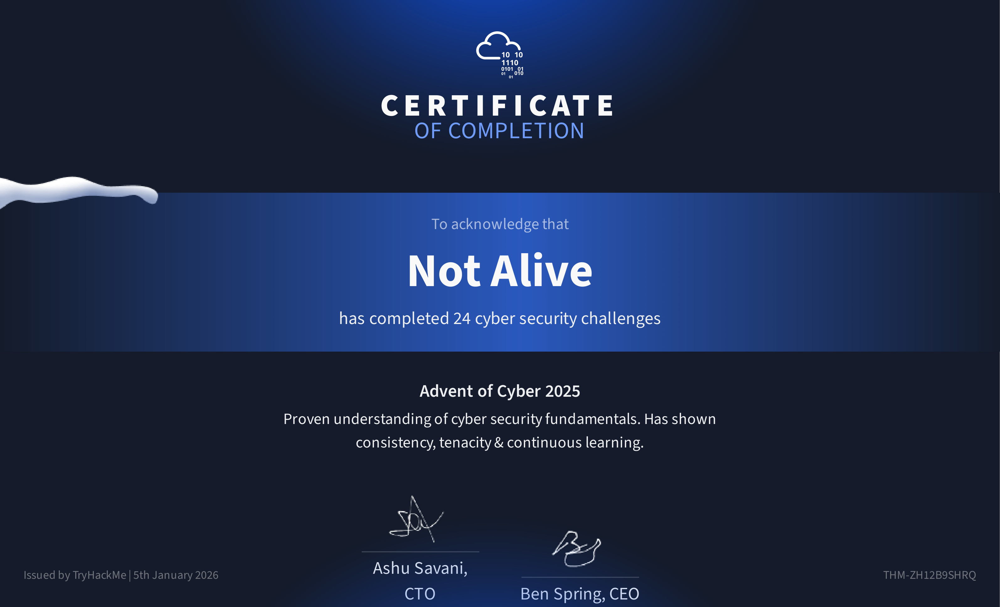
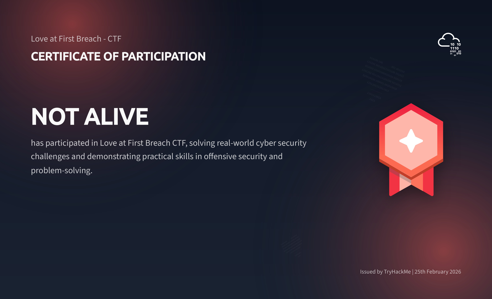

Who is Not Alive?
Short Intro
Hey there 👋, computer science undergraduate operating under the handle Not Alive.
My real name is Sanjay.
I am an Undergraduate student currently in my First year of Computer Science and Engineering.
I was Born in 2007.
I love cybersecurity, especially offensive security, CTFs, and network security.
Achievements
- TryHackMe: Ranked in the top 2% globally, with over 19000 points earned from various rooms and challenges.
- Capability score: of 59.
- Participated in CTFs like Industrial Intrusion, Advent of Cyber 2025, Love at First Breach on THM.
- Reached 286th place in the global TryHackMe CTF on Industrial Intrusion.
- Completed Web Fundamentals, Understanding web fundamentals, Major vulnerabilities, industry-used tools and Web application assessments.
- Completed Jr Penetration Tester, Pentesting methodologies and tactics Enumeration, exploitation and reporting, Realistic hands-on hacking exercises and Learning security tools used in the industry.
- Completed Web Application Pentesting, Learning about common web vulnerabilities, Understanding web authentication mechanisms, Performing server- and client-side exploits, Understanding the remedies for web vulnerabilities.
- Completed over 195 rooms on TryHackMe, covering a wide range of topics from web exploitation to red teaming.
- Earning over 30 badges on TryHackMe.
Certificates
The certificates I have earned:
This is the certificate for TryHackMe's Industrial Intrusion CTF, where I ranked 286th globally. It was a challenging and my very first CTF, it had stuffs that I have never seen before, cryptography, reverse engineering, web exploitation, and more was used in this, I was not able to solve the hard ones, but I was able to solve the easy and medium ones, in the end it was a great experience.

This is the certificate for TryHackMe's Advent of Cyber 2025 CTF, it was a fun and challenging CTF, it had a lot of web exploitation challenges, and some reverse engineering and cryptography challenges, This was the longest CTF I have ever done, it lasted for 25 days, and I was able to solve a lot of challenges, it was a great experience and I learned a lot from it, it mostly cryptography.

This is the certificate for TryHackMe's Love at First Breach CTF, this CTF was a Valentine's day themed CTF, it was normal but Valantine's day themed, this one was very hard, but a good experience, everyone in discord was like "ctf so humbling, i gotta go touch grass to remind myself that my self worth is beyond solving rooms" it was hilarious.
Book an appointment